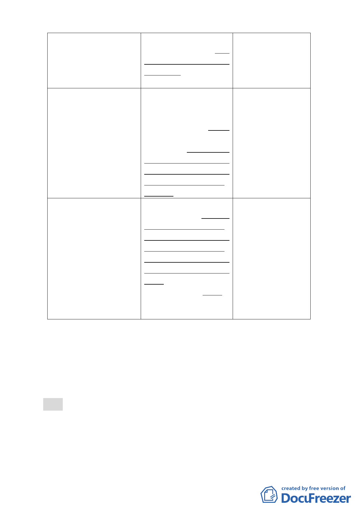

文化中心等回饋樓地板配 文化中心等回饋樓地板配
置於西側社區公園，並依都 置於西側社區公園，並得視
市計畫公共設施用地多目 實際規劃內容，設置於地上
標使用方案規定採立體多 層或地下層。
目標方式設置於地下層。
肆、計畫內容
肆、計畫內容
因應該社區民眾期待
三、特別規定
三、特別規定
及維護土地相關權利
（四）回饋時程
（四）回饋時程
人之權益，並配合都市
2.於金融服務專用區（一）、 2.於金融服務專用區（二） 設計審議作業予以調
（二）使用執照核發前，應 使用執照核發前，應完成其 整「其他所有回饋」之
完成其他所有回饋（包括公 他所有回饋。其中公園、公 辦理期程，以促進該公
園、道路、廣場設施及回饋 園北側計畫道路、廣場設施 共設施興闢順遂與推
樓地板之興建），最遲應於 及回饋樓地板之興建，最遲 動社區環境改造。
民國98年底以前施工完成。 應於民國100年9月底前施
工完成。
肆、計畫內容
3.容積率25％容積獎勵所 為配合前項回饋時
三、特別規定
提供之回饋項目，除『慶城 程，調整部分回饋項目
（四）回饋時程
街以西所回饋公園及園內 得於金(二)區使用執照
3.容積率25％容積獎勵所提 設施物之管理維護契約』及 核發前辦理完成。
供之回饋項目，申請人應於 『提供慶城街之造街計畫
金融服務專用區（一）、（二） 及設計』應於金融服務專用
使用執照核發前與市府訂 區(二)使用執照核發前辦理
定使用契約。
完成，其餘項目申請人仍應
於金融服務專用區（一）使
用執照核發前與市府訂定
使用契約。
四、 全案係市府99年5月10日府都規字第09931628700號公告公開
展覽並函送到會。
五、 公民或團體所提意見：計3件。
六、 申請單位：臺北市政府。
七、 法令依據：都市計畫法第19條。
決議：
一、 本案修正後通過。
二、 本案公展計畫書之「肆、修訂理由與內容 二、修訂內容…如
表四所示」，表四內容修正如下：
-2-